Глава 1. Первое знакомство с AI Infra¶
В предисловии рассказано, что побудило написать эту книгу, как организованы её главы и как с ней работать. Начиная с этой главы мы проследим процесс выполнения модели и познакомимся с системами, которые его обеспечивают. AI Infra — это инфраструктура, обеспечивающая обучение и инференс AI, включая вычислительные устройства, хранилища, межсоединения и программное обеспечение, которое организует работу этих ресурсов. В ходе обучения параметры модели корректируются на основе примеров; при инференсе полученные параметры используются для обработки входных данных и формирования результата.
Сначала в этой главе объясняется, как приложение выражает задачу посредством кода, модели и контекста. Затем мы проследим обработку одного запроса и познакомимся с системой, используя ёмкость, вычислительную мощность и пропускную способность для ответа на конкретные вопросы проектирования: поместятся ли данные, сколько придётся ждать ответа, какой выигрыш даст добавление ускорителей или изменение представления данных. В завершение мы рассмотрим процесс формирования нескольких реальных архитектур и покажем, как требования определяют проектирование системы.
1.1 Почему важна инфраструктура ИИ¶
1.1.1 Повышение уровня абстракции программирования: от операционной системы к контексту модели¶
Рассмотрим сервис ответов на вопросы по документам. Сначала разработчик задаёт программный процесс чтения документов, поиска и отображения результатов, а затем передаёт языковой модели вопрос пользователя и найденные материалы для генерации ответа. Контекст (context) — это входные данные, доступные при текущем вызове модели, включая инструкции к задаче, справочные материалы и результаты предыдущих взаимодействий. Не изменяя параметры модели, но меняя инструкции, примеры или справочные материалы, можно изменить решаемую моделью задачу и способ формирования ответа.
Если поручить такому сервису проверку кода, модели можно предоставить код, требования к тестированию и доступные инструменты, чтобы она предложила изменения или инициировала вызов инструмента; приложение выполнит тесты, добавит результаты в контекст следующего вызова, после чего модель продолжит анализ. Инструменты — это программные функции, доступные приложению, например чтение файлов или запуск тестов. Модель выбирает, что делать дальше, а хост-программа проверяет разрешения, выполняет операции и сохраняет результаты. Для выполнения одной задачи может потребоваться несколько вызовов модели и запусков инструментов.
Абстракция скрывает сложную реализацию за чётко определённым интерфейсом, позволяя разработчику организовать программу с помощью меньшего числа понятий. Программируемость — это способность разработчика изменять поведение системы через определённый интерфейс. В традиционных приложениях поведение в основном выражается программным кодом, компилятор преобразует код в исполняемые инструкции, а операционная система управляет ресурсами, необходимыми для работы программы. В приложениях на основе моделей появляется ещё одна важная точка управления: задача выражается через выбор модели, организацию контекста и предоставление инструментов. Часть поведения, для реализации которого раньше требовалось последовательно описывать правила, теперь определяется моделью на основе контекста; код по-прежнему организует процесс вызовов, а программы-инструменты по-прежнему обращаются к файлам, сети и устройствам через операционную систему.10
На рисунке 1-1 сопоставлены эти два способа организации. AI-агент (Agent) справа организует контекст, вызывает модель и выполняет выбранные ею инструменты. При этом интерфейс модели определяет, как приложение передаёт входные данные и получает выходные. Исполняющая система за интерфейсом вычисляет выход модели и сохраняет состояние контекста, необходимое для повторного использования на последующих шагах; ускоритель — это процессор, приспособленный к параллельному выполнению большого числа операций модели, память хранит параметры и состояние выполнения, а интерконнект передаёт данные между устройствами. Разработчик изменяет задачу на верхнем уровне, а нижние уровни должны воплотить эти изменения в конкретных вычислениях и обращениях к данным.
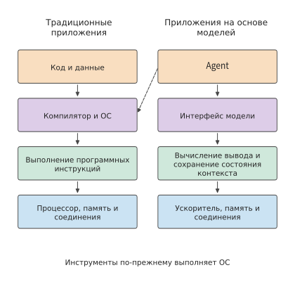
Рисунок 1-1. Способы выражения поведения приложения и пути выполнения. Слева программа организуется посредством кода, справа модель вызывается посредством контекста; сплошные линии обозначают направленные вниз зависимости выполнения, пунктирная линия показывает, что для выполнения инструментов по-прежнему требуется традиционная операционная система. Ускоритель, память и интерконнект отвечают соответственно за вычисления модели, хранение данных и передачу между устройствами.
Изменение программируемости повлияло и на работу сервисов моделей. Когда в системе ИИ одна модель обрабатывает запросы разных приложений, она использует один и тот же набор параметров. Система может объединить несколько запросов для совместного вычисления и использовать однократно считанные параметры, повышая утилизацию ускорителя. Такой способ называется пакетной обработкой, а число совместно выполняемых запросов в одном пакете — batch size (размер пакета). В то же время длинные документы, длинные ответы и многоэтапные вызовы инструментов изменяют объём вычислений, занимаемое состоянием место и время ожидания. Производительность одной и той же модели на одном и том же наборе ускорителей при обработке разных задач может значительно различаться.
За этой разницей в производительности стоит взаимное влияние модели и аппаратного обеспечения. С точки зрения проектирования модели сжатие сохраняемого состояния, изменение механизма внимания или использование лишь части параметров модели может изменить работу, которую должно выполнить аппаратное обеспечение. С точки зрения аппаратных условий объём памяти, скорость передачи данных и способ соединения устройств, в свою очередь, влияют на то, какие структуры моделей и методы выполнения подходят лучше. Только понимая эту двустороннюю связь, можно одновременно обсуждать качество ответов, время отклика и стоимость, а также объяснять, почему решение, подходящее для одного приложения, требует повторной оценки при использовании в другом.
В системах, основными задачами которых являются обучение и инференс моделей, разные уровни можно совместно проектировать вокруг единого полного процесса выполнения. Структура модели задаёт зависимости вычислений и данных, среда выполнения знает, когда состояние создаётся и когда используется, а аппаратное обеспечение выполняет соответствующие вычисления и передачу данных. Реорганизация выполнения с учётом этой информации позволяет устранить часть накладных расходов универсальной реализации. Одна и та же модель способна обрабатывать разные задачи в зависимости от контекста, одновременно поддерживая разнообразное поведение приложений и позволяя нижним уровням выполнять специализированную оптимизацию исполнения модели. Изменение программируемости верхнего уровня открывает новые возможности для совместной межуровневой оптимизации. В этой книге такие возможности оптимизации исследуются с помощью количественного анализа: объясняется, как меняются прежние проектные компромиссы и как новые реализации повышают производительность обучения и инференса.
1.1.2 Разделение обязанностей между шестью уровнями: от задачи до аппаратного обеспечения¶
От постановки до завершения запрос последовательно проходит через несколько уровней системы. Пользователь отправляет фрагмент кода и просит модель найти ошибку. Приложение передаёт код и вопрос сервису модели, сервис выбирает ускоритель для выполнения запроса, ускоритель считывает веса и входные данные, выполняет вычисления, а затем возвращает сгенерированный ответ приложению. Если выполнение совместно осуществляют несколько ускорителей, между ними также необходимо передавать промежуточные результаты. Следуя по этому пути, можно последовательно определить, где возникает ожидание и какие данные требуется перемещать.
Главный научный сотрудник Huawei Semiconductor доктор Ляо Хэн предложил модель «восемнадцатиуровневой пагоды», описывающую множество уровней: от приложений, моделей и программных систем до микросхем, технологических процессов производства и фундаментальной физики. Он отметил, что большинство людей знакомы лишь с одним или несколькими из этих уровней и потому упускают множество возможностей совместной межуровневой оптимизации.1 На рисунке 1-2 этот подход используется для разделения материала книги на шесть уровней:
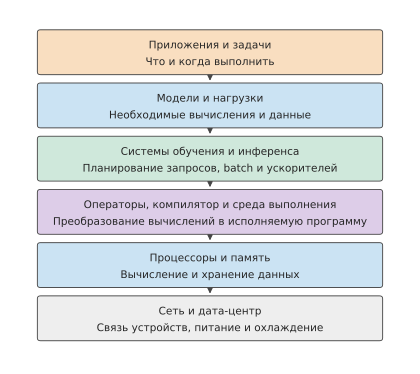
Рисунок 1-2. Разделение обязанностей между шестью уровнями: от приложения до аппаратного обеспечения.
На самом верхнем уровне находятся приложения и задачи. Диалог, генерация кода, голосовое взаимодействие, а также агенты (Agent), способные продвигаться к выполнению задачи посредством вызова инструментов, формулируют на этом уровне конкретные требования: какую задачу выполнить, насколько быстро вернуть результат и каков предельный бюджет. У обучения также есть собственные цели, например выполнить одно обновление модели или одну эпоху предварительного обучения за заданное время.
Следующий уровень — модели и нагрузка. Структура модели определяет, какие вычисления необходимо выполнить и какие данные сохранить, а фактическая нагрузка — когда эта работа поступит и как долго будет продолжаться. Краткий вопрос и длинный документ создают разные требования к вычислениям и памяти, даже если передаются одной и той же модели. Структура модели рассматривается в главе 2, а нагрузка обучения и инференса — в главе 3.
Системы обучения и инференса организуют эти требования в исполняемую работу. Этот уровень принимает запросы или задания, формирует batch, управляет состоянием выполнения и определяет, как использовать один или несколько ускорителей. При инференсе он должен координировать запросы, для которых уже идёт генерация, и вновь поступающие запросы; при обучении — дополнительно организовывать обновление параметров, обмен данными и восстановление. Этот уровень рассматривается в главах 8—10.
Ещё ниже находятся операторы, компилятор и среда выполнения. Такие операции модели, как умножение матриц и нормализация (изменение масштаба значений на основе статистик), необходимо преобразовать в программы, которые способен выполнить процессор. В этой книге базовые вычисления, такие как умножение матриц, называются операторами; библиотека операторов предоставляет реализации этих вычислений, компилятор преобразует программу в форму, исполняемую ускорителем, а среда выполнения отвечает за отправку программы и управление ресурсами во время исполнения. Вместе они определяют, как разбивать работу на блоки, использовать временное хранилище и выбирать моменты отправки заданий. Одно и то же математическое выражение может иметь разные способы доступа к данным и выполнения; эти различия подробно анализируются в главе 5. Здесь же содержится ключ к пониманию распределённого параллелизма: матрицу можно обрабатывать блоками в пределах одной карты, а модель на нескольких картах можно разделить по образцам, последовательностям, признакам, слоям или экспертам — подсетям в модели смеси экспертов, которые выбираются отдельно для каждого входа. В обоих случаях сначала нужно определить, кто вычисляет каждый блок, а затем организовать поступление входных данных и объединение результатов. Разница заключается в том, пересекают ли блоки границы внутрикристальной памяти, видеопамяти или сети. В главе 6 различные стратегии параллелизма объясняются на основе этой общей идеи, а не как не связанные друг с другом приёмы.
Процессоры и память выполняют вычисления и хранят данные. CPU — центральный процессор, выполняющий программы общего назначения; GPU — графический процессор, хорошо приспособленный для параллельной обработки множества однотипных операций и теперь широко используемый для вычислений моделей; NPU — процессор, разработанный для операций нейронных сетей. Основная память хранит данные, используемые CPU, видеопамять — данные, используемые GPU, а внутрикристальная память находится внутри процессорного кристалла и позволяет вычислительным блокам считывать данные поблизости. Вычислительный блок сначала считывает входные данные, затем выполняет операцию и в конце записывает результат. В главе 4 устройство ускорителей объясняется через соотношение вычислительной мощности и скорости чтения данных.
На самом нижнем уровне находятся интерконнекты и центры обработки данных. Устройства обмениваются данными через интерконнекты, серверы и более крупные совместно работающие группы соединяются сетями, а электропитание и охлаждение определяют возможные способы размещения ресурсов. Суперузлы и сети центров обработки данных рассматриваются в главах 6 и 7, а в главе 12 возможные места выполнения расширяются до оконечных устройств, периферии и облака.
Шесть уровней описывают основное разделение обязанностей, но некоторые функции охватывают несколько уровней. Планирование ресурсов, среда эксплуатации, наблюдаемость и тарификация должны организовываться с учётом информации с нескольких уровней; технологический процесс, корпусирование, электропитание и охлаждение определяют способы изготовления и размещения устройств. Сеть также играет роль не только на самом нижнем уровне: конкретные интерконнекты требуются моделям, операторам и сервисам, предполагающим совместную работу нескольких устройств.
При движении вниз по этим шести уровням задача постепенно превращается в конкретные вычисления и обращения к данным; при движении вверх доступный объём памяти, вычислительная мощность и пропускная способность ускорителя определяют, модель какого размера сможет выполнять система, сколько запросов она сможет обрабатывать одновременно и насколько быстро отвечать. Интерфейсы между этими уровнями служат точками приложения совместной оптимизации. Изменение представления состояния в модели меняет требования к памяти и передаче данных; слияние соседних операторов компилятором меняет место хранения промежуточных результатов; прямая передача данных между ускорителями, организованная средой выполнения, меняет частоту участия хоста.
1.1.3 Обработка одного запроса на генерацию¶
Экземпляр инференса — это набор исполнительных ресурсов, способный независимо обрабатывать запросы модели и состоящий из одного или нескольких ускорителей. Каждый запрос передаётся одному из таких экземпляров. На рисунке 1-3 показано разделение обязанностей между распределением запросов и выполнением внутри экземпляра: маршрутизатор сервиса — это программа, выбирающая место выполнения запроса; после выбора экземпляра маршрутизатором выполнение модели на ускорителях планируется внутри экземпляра. Сначала необходимо определить, кто отвечает за выполнение, и лишь затем можно понять, где следует разместить веса и кому передавать промежуточные результаты.
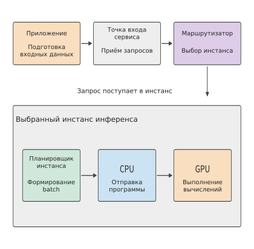
Рисунок 1-3. Маршрутизатор сначала выбирает экземпляр инференса для запроса, после чего внутренний планировщик экземпляра организует выполнение. Серая внешняя рамка охватывает один экземпляр, сплошные линии показывают направление передачи запросов и заданий.
Контекст включает пользовательский ввод, историю диалога, результаты поиска и ранее сгенерированное содержимое. Приложение формирует из этой информации запрос и передаёт его во входную точку сервиса модели. После проверки прав доступа, квоты и содержимого запроса маршрутизатор выбирает экземпляр с учётом целевой модели, нагрузки экземпляров и других условий; экземпляр может работать на одной карте или быть распределён по нескольким картам. После выбора экземпляра совместная работа этих карт организуется уже внутри него.
Затем текст преобразуется в последовательность токенов. Токен (token) — базовая единица обработки текста моделью; он может соответствовать одному символу, части слова или другому фрагменту, а число токенов в конкретном тексте определяется результатом токенизации. Преобразование текста может выполняться экземпляром или общим фронтендом. Планировщик экземпляра помещает запрос в очередь, затем включает его в batch и выделяет место для его состояния. После этого среда выполнения на CPU отправляет вычислительные задания на GPU, а GPU выполняет соответствующие операторы.11
Сначала модель обрабатывает входные данные — этот этап называется предзаполнением (prefill); затем она пошагово генерирует новые токены — этот этап называется декодированием (decode). На последующих шагах повторно используется ранее сохранённое состояние. Входящий в него KV-кэш (KV cache) хранит два вида векторов — ключи и значения, созданные токенами контекста, — для вычисления внимания на последующих позициях. Ключи и значения представляют собой используемые механизмом внимания данные; в главе 2 на примере конкретных операций объясняется, как они создаются. Планировщик внутри экземпляра непрерывно продвигает цикл генерации, и выход предыдущего шага становится входом следующего. Созданные токены преобразуются выходной обработкой в текст и возвращаются по соединению в потоковом режиме; если выход требует вызова инструмента, приложение запускает инструмент, добавляет результат в контекст и выполняет следующий вызов.
Прежде всего на каждом шаге вычислений повторно используются веса модели. Веса модели — полученные при обучении числовые параметры, используемые для преобразования входных данных в выходные. При запуске экземпляра или переключении модели веса загружаются из хранилища, а затем постоянно находятся в видеопамяти — это называется резидентным размещением — и используются для обработки множества запросов. Во время генерации вычислительные блоки GPU считывают из видеопамяти веса текущего слоя и состояние контекста, выполняют вычисления, а затем передают результат следующему слою. Таким образом, одни и те же данные перемещаются с двумя разными частотами: при загрузке модель передаётся на ускоритель, а при выполнении необходимые данные многократно передаются вычислительным блокам. В экземпляре с несколькими картами промежуточные результаты, вычисленные одной картой, также должны передаваться другим картам, чтобы последующие вычисления могли продолжиться. Промежуточный тензор — это созданный одной операцией и переданный последующим операциям многомерный числовой массив; матрица является двумерным тензором. Внешний запрос может состоять всего из короткого фрагмента текста, но внутри перемещаются гораздо более объёмные веса, состояния и промежуточные тензоры.
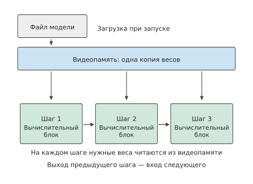
Рисунок 1-4. Веса загружаются один раз, а во время генерации считываются пошагово. Синяя рамка обозначает один и тот же набор весов, постоянно хранящийся в видеопамяти, три зелёные рамки — последовательные вычисления; стрелки обозначают чтение или зависимость результата, расстояние между шагами не отражает длительность.
На рисунке 1-5 показано аппаратное обеспечение, соответствующее этим программным функциям. Центр обработки данных включает входную точку и сервисы на CPU, общее хранилище, а также пул ресурсов ускорителей, состоящий из нескольких суперузлов. Суперузел — это группа ускорителей, тесно взаимодействующих через высокоскоростной интерконнект; они могут быть распределены по нескольким серверам или вычислительным лоткам — устанавливаемым в стойку сменным блокам с CPU и ускорителями.
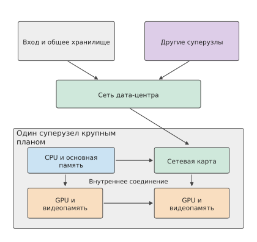
Рисунок 1-5. Двухуровневое представление физических соединений. В верхней части сервисы и суперузлы соединены сетью центра обработки данных; в нижней увеличен один суперузел с хостами, сетевыми картами, GPU и видеопамятью. Линии показывают пути данных, количество устройств приведено для иллюстрации.
Внутри сервера или вычислительного лотка CPU соединён с основной памятью и отвечает за хост-программы и управление выполнением; каждый GPU соединён со своей видеопамятью, выполняет вычисления модели и хранит необходимые для работы данные. HBM (память с высокой пропускной способностью) — распространённый тип видеопамяти ускорителей, непрерывно предоставляющий данные через широкий интерфейс. CPU и GPU могут соединяться через PCIe (высокоскоростной интерконнект периферийных устройств), а GPU могут напрямую обмениваться данными через отдельный высокоскоростной интерконнект. Сетевая карта подключает локальный узел к сети. В системах с поддержкой прямого доступа к памяти передающее оборудование может напрямую записывать данные в заданную область памяти, а CPU отвечает за запуск передачи и управление ею; подробнее этот механизм передачи рассматривается в главе 7.
Интерконнект внутри суперузла обычно называется scale-up (вертикальное масштабирование); его основная задача — обеспечить совместные вычисления группы ускорителей с небольшими коммуникационными издержками. Несколько суперузлов, в свою очередь, соединяются через сетевые карты и коммутируемую сеть — это называется scale-out (горизонтальное масштабирование) и служит для расширения кластера. В обоих случаях необходимо учитывать пропускную способность, задержку, перегрузки и отказы, но масштаб совместной работы и её стоимость различаются. Например, в официальной конструкции NVIDIA GB200 NVL72 36 CPU Grace и 72 GPU Blackwell объединены в одной стойке, а 72 GPU напрямую взаимодействуют через высокоскоростной GPU-интерконнект NVIDIA NVLink, образуя единый домен интерконнекта; за внешнее подключение отвечает кластерная сеть. Такая организация расширяет область тесного взаимодействия от одного сервера до целой стойки: веса и состояние модели можно распределить между большим числом ускорителей, а частая передача данных выполняется по внутристоечному интерконнекту.12
Таким образом, сети ИИ и традиционные сети центров обработки данных разделяют обязанности. Входная точка сервиса передаёт запросы, общее хранилище предоставляет файлы моделей, а интерконнект ускорителей передаёт промежуточные результаты вычислений. Эти три вида трафика различаются частотой передачи, объёмом данных и зависимостями: файлы модели можно загрузить заранее, тогда как часть результатов текущего слоя должна поступить своевременно, иначе следующий слой не сможет продолжить работу. Поэтому физические соединения непосредственно влияют на время выполнения модели.
Упражнение 1-1 (углублённое): чтение весов, рост состояния и передача данных в одном запросе
На основе рисунков 1-3—1-5 дорисуйте процесс роста состояния KV по мере увеличения выходных данных, а затем отдельно обозначьте загрузку файла модели, чтение весов за один шаг, добавление в KV и передачу результатов между картами. Если длина ответа увеличится со 100 до 1000 токенов, какие данные загрузятся только один раз, а число каких обращений возрастёт? Если создать второй экземпляр как копию первого, как изменятся объём весов и маршрутизация запросов?
На выполнение модели влияют как возможности одной карты, так и способ соединения ускорителей. Вычислительная мощность и пропускная способность памяти одной карты определяют время локальных вычислений, чтения и записи, а совместная работа нескольких карт добавляет обмен данными и ожидание. В этой главе сначала оценивается выполнение на одной карте, а в последующих главах тот же метод применяется к суперузлам и сетям.
Сначала представим набор реальных моделей, проходящих через всю книгу. DeepSeek V4 и V4.1 Flash образуют сквозной пример, за развитием которого можно последовательно проследить. В V4 контекстное сжатие и разреженный доступ уже изменили требования к хранению и чтению данных, а V4.1 Flash дополнительно перераспределяет обязанности внутри модели. В традиционной модели decoder-only (только с декодером) входные токены обычно проходят через всю основную часть модели, послойно формируя необходимое для генерации состояние; V4.1 Flash использует архитектуру причинного кодировщика-декодера (Causal Encoder-Decoder, CED), в которой кодировщик формирует представление контекста, а декодер получает из него глобальную информацию. Поэтому множеству входных токенов не требуется проходить через вычисления основной части декодера; при генерации нового токена модель по-прежнему последовательно проходит через кодировщик и декодер. Пути выполнения для входных и выходных данных несимметричны, что позволяет модели перераспределить вычислительные затраты с учётом характерной для агентов нагрузки: большого объёма входных данных и сравнительно малого объёма выходных.18
Это архитектурное решение также меняет то, что система должна хранить и передавать. В книге рассматриваются однотипные сеансы: агент ожидает возврата результата инструмента, восстанавливает предыдущий контекст, обрабатывает новые входные данные и продолжает генерацию. В главе 2 объясняются структура и состояние CED, в главе 3 разбираются входная и генерационная нагрузки, в главах 4—7 отслеживаются выполнение на ускорителях и пути данных, в главах 8 и 9 рассматриваются кэширование состояния и распределение запросов, а в завершение сравниваются результаты выполнения задач целиком. Модель с открытым исходным кодом Qwen3 служит базовым примером для построения метода расчёта; V4/V4.1 используются для проверки того, как модель и система изменяются совместно.
1.1.4 От хранимой программе к выполнению по потоку данных¶
Чтобы понять устройство AI-ускорителя, полезно представить вычислительную систему как здание. Если все туалеты находятся на первом этаже, жителям верхних этажей приходится спускаться вниз, а расстояние и очереди ограничивают эффективность здания. Туалеты на каждом этаже сокращают путь, но требуют дополнительной площади, труб, обслуживания и планирования вместимости. Регистры, кэши, буферы на кристалле, память устройства и память хоста — это уровни доступа к данным с разным расстоянием, объёмом и стоимостью.
Развитие компьютерной архитектуры постоянно сокращало это расстояние. Компьютеры с хранимой программой размещают инструкции и данные в адресуемой памяти; когда процессоры стали работать быстрее, чем память успевала подавать данные, появились регистры, многоуровневые кэши, предвыборка, векторные инструкции и параллельное выполнение. GPU и AI-ускорители сделали повторное использование данных явным: потоки совместно работают с общей памятью, матричные блоки повторно используют операнды по фиксированным путям, механизмы копирования перекрывают перенос с вычислениями, а компилятор задаёт блоки, раскладки и буферы.
Prefill, decode, доступ к KV и маршрутизация экспертов в Transformer имеют разные области повторного использования, поэтому одной автоматической политики кэширования недостаточно. Поэтому вычислительные блоки, локальная память и пути передачи данных проектируются совместно; следующие главы показывают, как превратить выполнение модели в вычислимую, передаваемую и планируемую работу.
1.2 Ключевые показатели проектирования систем¶
1.2.1 Оценка решений по порядку величины¶
Прежде чем оценивать выполнение на одной карте, необходимо знать примерную продолжительность основных типов операций. В 2009 году Джефф Дин представил на одном из своих выступлений ставшую впоследствии широко известной таблицу под названием «Numbers Everyone Should Know». В ней приведено время доступа к кэшу и памяти, а также выполнения дисковых и сетевых операций. Эта таблица отражает практический подход: прежде чем писать программу или строить систему, сначала оценить, сколько времени и ресурсов потребуют основные операции.2
Ниже полностью приведены 12 операций и соответствующие значения с исходного слайда. Всё время указано в ns (наносекундах, миллиардных долях секунды); 1 μs (микросекунда) равна 1000 ns, а 1 ms (миллисекунда) — 1000 μs. Среди единиц данных 1 byte (байт) равен 8 bit (битам); bit/s обозначает число передаваемых битов в секунду, а G в Gbit/s означает миллиард. Единицы ёмкости KB, MB, GB и TB обозначают соответственно \(10^3\), \(10^6\), \(10^9\) и \(10^{12}\) байт; KiB, MiB и GiB — соответственно \(2^{10}\), \(2^{20}\) и \(2^{30}\) байт. Эти числа соответствуют оборудованию 2009 года и нужны для понимания соотношения порядков величин различных операций.
В кэше хранятся данные, которые могут вскоре понадобиться снова; кэш первого уровня обычно меньше кэша второго уровня и расположен ближе к вычислительному ядру. Предсказание ветвлений — это прогноз процессора относительно того, по какому пути инструкций продолжится выполнение; при ошибочном прогнозе выполнение приходится перестраивать. Поток — независимо планируемая единица выполнения инструкций внутри программы; мьютекс ограничивает одновременный доступ нескольких потоков к общим данным. Позиционирование диска — процесс перемещения головки механического диска к нужной дорожке. Zippy — библиотека сжатия, которую в то время использовала Google. Эти операции относятся соответственно к вычислениям, синхронизации, хранению данных и сети, а продолжительность их выполнения может различаться на несколько порядков.
| Операция | Время (ns) |
|---|---|
| Доступ к кэшу первого уровня | 0.5 |
| Восстановление после ошибочного предсказания ветвления | 5 |
| Доступ к кэшу второго уровня | 7 |
| Блокировка или разблокировка мьютекса | 25 |
| Доступ к основной памяти | 100 |
| Сжатие 1K байт с помощью Zippy | 3,000 |
| Передача 2K байт по сети 1 Gbit/s | 20,000 |
| Последовательное чтение 1 MB из основной памяти | 250,000 |
| Передача туда и обратно внутри одного центра обработки данных | 500,000 |
| Позиционирование диска | 10,000,000 |
| Последовательное чтение 1 MB с диска | 20,000,000 |
| Передача пакета из Калифорнии в Нидерланды и обратно | 150,000,000 |
Возьмём три исторических показателя: доступ к основной памяти занимает около 100 ns, одна передача туда и обратно внутри центра обработки данных — около 500,000 ns, а позиционирование диска — около 10,000,000 ns. После преобразования единиц получаем соответственно 0.1 μs, 0.5 ms и 10 ms, как показано на рис. 1-6.
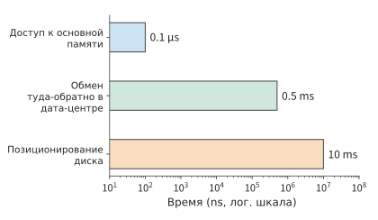
Рис. 1-6. Задержка трёх операций из выступления Джеффа Дина 2009 года. Горизонтальная ось имеет логарифмический масштаб, соседние порядки величины различаются в десять раз; сначала определите операцию, а затем сравните её стоимость при последовательном ожидании.
Согласно этим показателям, одно позиционирование диска занимает примерно в сто тысяч раз больше времени, чем один доступ к основной памяти. Если запрос должен последовательно ожидать нескольких операций доступа, их задержки складываются и увеличивают время выполнения запроса. Если для определения места следующего обращения запрос должен сначала найти некоторый блок данных, то даже при минимальном объёме вычислений между двумя обращениями процессору придётся ждать завершения всей операции доступа к хранилищу.
Например, предположим, что запрос последовательно выполняет 20 позиционирований по 10 ms каждое, а все вычисления CPU занимают 1 ms. Общее время составит 201 ms. Двукратное ускорение вычислений сэкономит лишь 0.5 ms; если же разместить связанные данные последовательно и сократить число позиционирований с 20 до 10, экономия составит 100 ms. Эти две оптимизации воздействуют соответственно на вычисления и ожидание, а разница в выигрыше определяется долей каждого из них в исходном времени выполнения.
Разложив время на составляющие, можно определить направление оптимизации: чем большую долю исходного общего времени занимает некоторая часть, тем сильнее сокращение этой части улучшает общий результат. В предыдущем примере с позиционированием вычисления занимают лишь \(1/201\) общего времени; даже если полностью устранить эту часть, общее время сократится всего примерно на \(0.5\%\).
Обобщив это соотношение, получаем формулу общего ускорения. Если долю \(f\) исходного времени выполнения можно ускорить в \(s\) раз, а остальная работа и порядок выполнения остаются неизменными, то общее ускорение равно:
Это закон Амдала. Даже если ускорить эту часть настолько, что её временем можно будет пренебречь, общее ускорение не превысит \(1/(1-f)\). При сокращении числа позиционирований уменьшается самая большая составляющая — время ожидания, поэтому такая оптимизация влияет на общее время гораздо сильнее, чем ускорение CPU.
Пример: почему при использовании одного и того же инструмента AI-программирования разные команды получают разное общее ускорение? Предположим, что выполнение задачи разработки состоит из последовательных этапов коммуникации, написания кода, проверки и согласования, а инструмент AI-программирования ускоряет написание кода в 5 раз, не изменяя продолжительность остальных этапов. В команде крупной компании со множеством уровней координации написание кода может занимать лишь 20–30% исходного общего времени, а остальное уходит на совещания, межкомандную коммуникацию и согласования. После подстановки в формулу общее ускорение составит лишь около 1.19–1.32 раза. Например, если из исходных 100 часов 20 часов уходило на написание кода, после сокращения этого этапа до 4 часов остальные этапы по-прежнему займут 80 часов, а общее время составит 84 часа.
В стартапе с меньшими затратами на коммуникацию написание кода может занимать 70–80% исходного общего времени, и такое же ускорение этого этапа позволит получить общее ускорение примерно в 2.27–2.78 раза. Например, при доле написания кода 80% исходные 100 часов превратятся в \(20+80/5=36\) часов.
Закон Амдала применим к любому полному процессу, в котором ускоряется лишь часть этапов. CPU, инференс модели и разработку программного обеспечения можно анализировать с помощью одного и того же вопроса: какую долю времени первоначально занимала ускоряемая часть и на что уходит оставшееся время? Для дальнейшего сокращения срока поставки необходимо улучшать также коммуникацию, проверку и согласование. Повышение локальной скорости в конечном счёте следует оценивать в рамках всей задачи.
Метод, представленный в этой таблице, можно напрямую применять к выполнению моделей: сначала определить, какие ресурсы использует каждая операция, а затем сравнить требуемое время.
1.2.2 Какие ключевые показатели необходимы для анализа AI-систем¶
Предположим, что некоторой задаче требуется одновременно хранить \(M\) байт, выполнить \(F\) операций с плавающей точкой и прочитать или записать \(R\) байт через некоторый интерфейс хранилища. Ускоритель предоставляет ёмкость \(M_{\mathrm{cap}}\), вычислительную пропускную способность \(\Pi\) и пропускную способность интерфейса \(\beta\). Эти три вида требований необходимо по отдельности сопоставить с ресурсами ускорителя:
Ёмкость определяет, можно ли одновременно хранить все необходимые данные; два других выражения преобразуют объём работы во время. Данные можно сохранить один раз, а прочитать многократно, поэтому \(M\) и \(R\) необходимо вычислять отдельно. Если для \(\Pi\) и \(\beta\) взять пиковые значения, результатом будет нижняя граница времени, необходимого для выполнения заданных вычислений и операций чтения и записи.
Пиковые значения определяются числом вычислительных блоков чипа, рабочей частотой и интерфейсом памяти, поэтому эта нижняя граница является физическим пределом оборудования: программное обеспечение при любой организации не сможет работать быстрее. Отношение нижней границы к фактическому времени \(T\) показывает, какая доля возможностей оборудования была использована. Для вычислений отношение \(F/(\Pi T)\) называется MFU (model FLOPs utilization, коэффициент использования FLOPs модели), а для пропускной способности отношение \(R/(\beta T)\) — MBU (memory bandwidth utilization, коэффициент использования пропускной способности памяти); оба значения не превышают 1. Эти два отношения неоднократно используются в книге для ответа на один и тот же вопрос: насколько проект далёк от физического предела оборудования.
Помимо ёмкости, вычислительной пропускной способности и пропускной способности памяти необходимо учитывать задержку операций. Ниже описано, как эти четыре типа показателей используются в оценках.
Ёмкость отвечает на вопрос, сколько данных можно разместить одновременно. Например, объём видеопамяти ускорителя определяет, поместятся ли в неё веса модели, состояние контекста и временная рабочая область среды выполнения. Ёмкость измеряется в byte (байтах).
Вычислительная пропускная способность отвечает на вопрос, сколько операций можно выполнить за единицу времени. Обычно FLOP обозначает одну операцию с плавающей точкой, FLOPs — общее число операций, а FLOP/s — число операций с плавающей точкой в секунду. GFLOPs и TFLOPs обозначают соответственно миллиард и триллион операций с плавающей точкой, а GFLOP/s и TFLOP/s — соответствующую скорость в секунду. В матричных вычислениях одно умножение и одно сложение обычно считаются двумя операциями. Пиковая матричная производительность соответствует определённым условиям точности входных данных, точности накопления и разреженности. Плотные вычисления выполняются над полной матрицей; разреженные вычисления используют нулевые элементы или заданную структуру разреженности, чтобы пропускать часть операций.
Пропускная способность отвечает на вопрос, сколько данных можно передать за единицу времени. Пропускная способность видеопамяти характеризует возможности передачи данных между видеопамятью и чипом, а пропускная способность межкарточных соединений и сети — возможности других путей. Для оценки определённого участка передачи используется пропускная способность интерфейса этого участка.
Задержка отвечает на вопрос, сколько времени приходится ждать после запуска одной операции. Даже интерфейс с высокой пропускной способностью может иметь существенное время запуска или передачи туда и обратно. При передаче больших блоков данных время главным образом определяется отношением объёма данных к пропускной способности; для небольших запросов, которые должны ожидаться последовательно, основную часть могут занимать время запуска и передачи туда и обратно.
Рассмотрим реальный ускоритель. H100 — одно из поколений GPU NVIDIA, а SXM обозначает форм-фактор модуля, используемый в этом примере. BF16 — формат с плавающей точкой, в котором каждое число занимает 16 бит (2 байта), а FP32 — формат, в котором каждое число занимает 32 бита (4 байта); матричное умножение может считывать входные данные BF16 и хранить результаты накопления в FP32. H100 SXM имеет 80 GB видеопамяти, пропускную способность HBM 3.35 TB/s и пиковую производительность плотных матричных вычислений около 989.4 TFLOP/s при входных данных BF16 и накоплении FP32.3
Если добавить к H100 модели NVIDIA A100 80GB SXM и GeForce RTX 4090, получится краткая справочная таблица ресурсов GPU. Они используют архитектуры Hopper, Ampere и Ada соответственно. Ёмкость в таблице указана в номинальных GB производителя, пропускная способность — в десятичных TB/s; для матричной производительности во всех случаях приведено пиковое значение плотных вычислений с входными данными BF16 и накоплением FP32. Последняя строка получена делением 1 GB на пропускную способность видеопамяти.16
| Ресурс или операция | RTX 4090 | A100 80GB SXM | H100 SXM |
|---|---|---|---|
| Ёмкость видеопамяти (GB) | 24 | 80 | 80 |
| Пропускная способность видеопамяти (TB/s) | 1.008 | 2.039 | 3.35 |
| Пиковая производительность матриц BF16 (TFLOP/s) | 165.2 | 312 | 989.4 |
| Чтение 1 GB при пиковой пропускной способности (ms) | 0.99 | 0.49 | 0.30 |
Эта таблица содержит показатели производительности оборудования, необходимые для преобразования объёма работы во время. Например, если объём чтения и записи остаётся неизменным, а пропускная способность удваивается, \(R/\beta\) уменьшается вдвое; если объём вычислений остаётся неизменным, а вычислительная производительность удваивается, \(F/\Pi\) также уменьшается вдвое.
1.2.3 Пересчёт объёма хранения параметров и пропускной способности соединения¶
Чтобы использовать эти четыре типа показателей для оценки, их необходимо сопоставить с конкретной работой. Сначала параметры модели преобразуются в число байт, чтобы определить, поместятся ли они на ускорителе; затем число байт делится на пропускную способность, чтобы оценить время перемещения этих данных.
Рассмотрим реальную модель DeepSeek-R1-Distill-Llama-70B. Она основана на архитектуре Llama и является плотной моделью — для вычисления каждого токена используются все параметры. Опубликованные веса содержат около 70.554 миллиарда параметров. Буква B в названии означает миллиард, а 70B — приблизительное число параметров; в последующих формулах переменная \(B\) обозначает число запросов в batch. Обозначим число параметров через \(N\), а число байт для хранения одного веса — через \(b_W\). В BF16 каждый вес занимает 2 байта, поэтому общий объём опубликованных файлов весов равен13
В этом разделе везде используются десятичные GB, то есть \(1\ \mathrm{GB}=10^9\) bytes; двоичная единица GiB равна \(2^{30}\) bytes. Таким образом, 141.11 GB — это примерно 131.42 GiB. Вычитать размер весов из доступной ёмкости ускорителя можно только после приведения обоих значений к одинаковым единицам.
Весам объёмом 141.11 GB недостаточно номинальных 80 GB видеопамяти одной H100 SXM. Если равномерно разделить веса между двумя картами, на каждой они займут около 70.55 GB и останется примерно по 9.45 GB. Разбиение означает, что разные ускорители хранят и вычисляют отдельные части модели. Двум картам потребуется обмениваться промежуточными результатами; конкретные методы разбиения и коммуникации рассматриваются в главе 6.
Можно также изменить точность хранения весов. Квантизация (quantization) представляет значения меньшим числом битов: например, исходные 16-битные веса с плавающей точкой приближённо представляются 8-битными целыми числами, а scale (масштабирующий коэффициент) используется для восстановления из целого числа приблизительного значения в соответствующем диапазоне. После квантизации каждый вес занимает не 2, а 1 байт, поэтому потребление памяти заметно снижается.
В используемой в этой книге схеме групповой квантизации один scale является общим для каждых 128 весов, а часть параметров продолжает использовать BF16. Согласно расчёту для реальной конфигурации модели, все веса и дополнительные данные квантизации в 8-битной схеме занимают около 73.73 GB, поэтому помещаются на одной H100 SXM, оставляя примерно 6.27 GB. На рис. 1-7 оба варианта показаны в одном масштабе ёмкости: веса BF16 распределяются по двум картам либо после квантизации помещаются на одну карту.
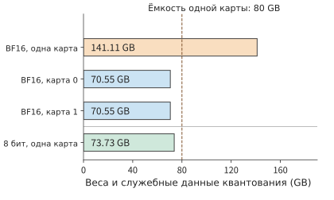
Рис. 1-7. DeepSeek-R1-Distill-Llama-70B: веса BF16 в сумме занимают 141.11 GB, а после равномерного распределения по двум картам — около 70.55 GB на каждой; после групповой 8-битной квантизации общий объём составляет 73.73 GB. Все полосы показаны в одинаковом масштабе, пунктирная линия обозначает номинальную ёмкость одной H100 SXM — 80 GB. Длина полос учитывает только веса и соответствующие дополнительные данные квантизации.
Как KV-кэш увеличивает потребность одного запроса в видеопамяти. При генерации текста в видеопамяти также необходимо хранить KV-кэш для непосредственного повторного использования в последующих вычислениях; кроме того, операторам нужна временная рабочая область. Поэтому проверку ёмкости следует записывать так:
Здесь \(M_W\) — веса и дополнительные данные квантизации, \(M_{\mathrm{state}}\) — состояние контекста запроса, \(M_{\mathrm{work}}\) — рабочая область, а \(M_{\mathrm{cap}}\) — доступная ёмкость памяти ускорителя. Например, для одного запроса длиной 8192 токена KV-кэш BF16 этой модели занимает 2.5 GiB, то есть около 2.68 GB. Если дополнительно зарезервировать 2 GiB, или около 2.15 GB, для рабочей области, общий объём 8-битной схемы составит примерно \(73.73+2.68+2.15=78.56\) GB, что соответствует данному бюджету ёмкости. В главе 2 размер KV-кэша будет выведен из числа слоёв модели и структуры внимания, а также будут рассчитаны требования к памяти для более длинного контекста и большего числа одновременных запросов.
Если вместо этого использовать RTX 4090 с номинальными 24 GB видеопамяти, те же 73.73 GB весов превысят суммарные 72 GB трёх карт. При таком же расчёте по номинальной ёмкости даже для хранения одних только весов потребуется не менее четырёх карт; кроме того, для каждой карты необходимо проверить объём KV-кэша и рабочей области. При одинаковых модели и точности разная ёмкость одной карты изменяет требуемое число ускорителей.
Для сетевой передачи необходимо выполнять такое же преобразование единиц. Пропускная способность сети часто измеряется в bit/s; поскольку 8 bit равны 1 byte, линейная скорость сетевой карты ConnectX-7 с пропускной способностью 400 Gbit/s — то есть номинальная скорость передачи соединения — равна 50 GB/s. Передача 1 GB данных с такой линейной скоростью занимает 20 ms. Каждая передача также требует времени запуска, а накладные расходы протокола и другой трафик в общем соединении влияют на пропускную способность, фактически доступную приложению. Учёт этих факторов на всём пути передачи позволяет точнее оценить время коммуникации.
Упражнение 1-2 (основное): требования к видеопамяти и распределение по нескольким картам при разной точности весов
Веса BF16 модели DeepSeek-R1-Distill-Llama-70B занимают 141.11 GB, а 8-битные квантизованные веса — 73.73 GB. Модель развёртывается на картах H100 SXM, каждая из которых имеет 80 GB видеопамяти. Зарезервируйте на каждой карте 5 GB для состояния и рабочей области и определите, помещается ли модель при развёртывании на одной карте и при равномерном распределении весов между двумя картами. Затем рассмотрите две карты с разным объёмом видеопамяти: RTX A6000 на 48 GB и H100 SXM на 80 GB. Для обоих вариантов точности определите, возможно ли развёртывание, и для каждого допустимого варианта предложите один способ распределения весов. Наконец, преобразуйте 400 Gbit/s в GB/s и вычислите идеальное время передачи 1 GB.
1.3 Оценка одного выполнения модели с помощью нескольких чисел¶
1.3.1 Что проверить в первую очередь при генерации одного токена¶
Пример 1-1: как приблизить время одного шага генерации модели 70B к целевым 10 мс? Можно ли на одной H100 SXM заставить DeepSeek-R1-Distill-Llama-70B из предыдущего раздела генерировать новый токен не более чем за 10 мс? Сначала примем, что каждый параметр занимает один байт, а затем сравним удвоение вычислительной мощности, удвоение пропускной способности и повторное использование весов внутри batch.
Решение: сначала проверим объём видеопамяти, затем вычислим объём вычислений и чтения.
Чтобы упростить ручные расчёты, приблизительно примем число параметров модели равным \(N=70\times10^9\). Сначала оценим объём данных основных весов из расчёта один байт на параметр; после чтения они преобразуются в BF16 и участвуют в матричных операциях. Для одного запроса на каждом шаге обрабатывается один новый токен, а эти веса считываются из видеопамяти один раз за шаг.
Условия оценки: чтение весов и матричные вычисления полностью перекрываются. Для необходимого объёма памяти используем полученное в предыдущем разделе значение 73,73 ГБ, учитывающее дополнительные данные квантования; в этом разделе объём чтения основных весов сначала приблизительно примем равным 70 ГБ. В модели времени учитываются только умножение со сложением для матриц основных весов и одно полное чтение весов; используются пиковая производительность матричных вычислений BF16 и пропускная способность HBM из таблицы ресурсов. Чтение и вычисления оцениваются в предположении их полного перекрытия.
Бюджет памяти для одного запроса уже проверен в предыдущем разделе. Что касается скорости генерации, после загрузки весов в видеопамять на каждом шаге всё равно требуется передавать участвующие в вычислениях веса вычислительным блокам; согласно приведённому приближению, на каждом шаге считывается около 70 ГБ.
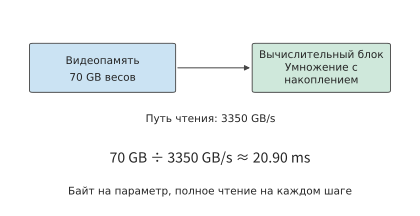
Рис. 1-8. В этом примере из расчёта один байт на параметр объём чтения основных весов приблизительно принимается равным 70 ГБ. Веса постоянно находятся в видеопамяти, а вычислительные блоки на каждом шаге считывают их через один и тот же интерфейс; деление объёма чтения на пропускную способность интерфейса даёт нижнюю границу времени чтения 20,90 мс.
Затраты 20,90 мс на чтение повторяются на каждом шаге генерации. Для одного запроса вход следующего шага определяется текущим выходом, поэтому последующие шаги должны выполняться последовательно по этой цепочке зависимостей.
Объём вычислений также можно сначала оценить приближённо. При умножении матрицы на вектор каждый вес обычно участвует в одном умножении, после чего полученное произведение прибавляется к результату; если считать умножение и сложение отдельно, это соответствует примерно двум операциям с плавающей точкой. Поэтому объём основных матричных вычислений в этом примере приблизительно равен:
Множитель \(2N\) возникает потому, что при проекции — линейном преобразовании вектора признаков с помощью матрицы весов — каждый вес умножается на соответствующую компоненту вектора признаков токена, после чего произведение прибавляется к выходному значению. Чем больше весов в матрице параметров, тем больше объём этой работы; когда число участвующих в вычислении токенов в batch увеличивается, одна и та же матрица весов обрабатывает больше векторов признаков токенов, поэтому объём вычислений также возрастает. В главе 2 будет подробно рассмотрена реальная модель, где помимо этой линейной работы присутствуют взаимодействия механизма внимания, зависящие от длины контекста.
Обозначим размер batch через \(B\) и позволим этим \(B\) запросам совместно использовать однократно считанные веса. Тогда получим три величины этой учебной модели:
Первые два выражения на этом шаге совпадают, поскольку веса хранятся в одном экземпляре и считываются один раз. При выполнении следующего шага генерации резидентный объём по-прежнему равен \(M_W\), но дополнительно выполняется ещё одно чтение объёмом \(R_W\). Увеличение \(B\) повышает объём вычислений на текущем шаге: с одной и той же матрицей весов необходимо выполнить умножение со сложением для векторов текущих входных токенов большего числа запросов. В главе 2 дополнительно будет учтено независимое состояние контекста каждого запроса.
1.3.2 Сколько времени занимают вычисления и чтение по отдельности¶
Разделив \(F=140\ \mathrm{GFLOPs}\) и \(R_W=70\ \mathrm{GB}\) на соответствующие характеристики ресурсов, получим две нижние границы времени для одного запроса.
Нижняя граница времени чтения весов примерно в 148 раз больше времени матричных вычислений. При номинальной вычислительной мощности матричные операции выполняются очень быстро, однако передача весов из видеопамяти вычислительным блокам занимает гораздо больше времени. До завершения текущего шага все эти данные должны быть считаны.4
Причина в том, что в этом примере на каждый считанный вес выполняется лишь одна операция умножения со сложением. Быстро обработав уже считанные данные, вычислительные блоки вынуждены ждать поступления следующих. Повышение вычислительной мощности может сократить только время умножения со сложением, но не ускоряет чтение из видеопамяти.
Следует ли складывать эти два времени или выбирать большее из них, зависит от возможности перекрытия чтения и вычислений. Если данные поступают блоками, то во время вычислений над текущим блоком можно продолжать чтение следующего. В упрощённой модели с полным перекрытием нижняя граница времени равна:
После выхода на установившийся режим каждый блок данных должен пройти этапы чтения и вычислений, поэтому скорость обработки определяется более медленным из них. В этом примере чтение весов значительно медленнее матричных вычислений, следовательно, оптимизацию прежде всего следует направить на сокращение этих 20,90 мс чтения.
Обсуждение: насколько вычислительная мощность, пропускная способность и повторное использование внутри batch могут сократить время генерации? Одно только чтение весов занимает не менее 20,90 мс, что уже превышает целевые 10 мс. Хотя эти данные помещаются в видеопамять, скорость их чтения всё равно недостаточна. Сначала по отдельности сравним эффект повышения вычислительной мощности и пропускной способности.
При удвоении вычислительной мощности время матричных вычислений уменьшается примерно с 0,1415 до 0,0707 мс, но чтение весов по-прежнему занимает около 20,90 мс, поэтому определяющая время выполнения нижняя граница чтения не меняется. Только при удвоении пропускной способности HBM время чтения снижается примерно до 10,45 мс, вслед за ним уменьшается и текущая нижняя граница. Обе модификации улучшают одну из характеристик оборудования, но по-разному влияют на время выполнения задачи.
Другой способ — уменьшить объём считываемых данных. Если при неизменном объёме вычислений сократить объём весов вдвое, нижняя граница чтения также снизится примерно до 10,45 мс. Удвоение пропускной способности вдвое повышает скорость чтения, а сокращение весов вдвое уменьшает объём считываемых данных; в этой формуле оба способа дают одинаковый результат. В главах 2 и 5 будут рассмотрены форматы представления с низкой разрядностью и процесс преобразования.
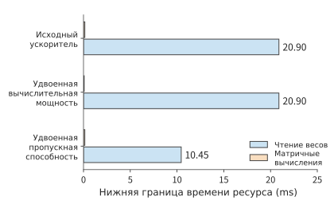
Рис. 1-9. При неизменных объёмах вычислений и чтения по отдельности удваиваются вычислительная мощность и пропускная способность. Синяя полоса показывает нижнюю границу чтения весов, оранжевая — нижнюю границу матричных вычислений; более продолжительное чтение определяет направление оптимизации при этих условиях. Каждый столбец показывает нижнюю границу времени вычислений или чтения данных, однако полное выполнение всё равно должно учитывать зависимости.
Теперь изменим организацию запросов. Предположим, что восемь запросов обрабатываются одновременно и совместно используют одно чтение весов. Объём чтения весов для всего batch остаётся равным 70 ГБ, а объём матричных вычислений становится примерно в восемь раз больше, чем для одного запроса. В этом случае нижняя граница времени матричных вычислений составляет около 1,13 мс, а нижняя граница чтения по-прежнему равна 20,90 мс. Если этот batch создаёт восемь выходов, то приходящееся на каждый выход время чтения весов составляет около 2,61 мс.
Выполнение всего batch создаёт восемь выходов, поэтому пропускная способность повышается примерно с 47,9 токена/с в модели одного запроса до 383 токенов/с, но каждый запрос по-прежнему должен ожидать завершения всего batch. Повторное использование внутри batch увеличивает число выходов, генерируемых за единицу времени, тогда как задержка одного запроса зависит от выполнения и ожидания, через которые он проходит.
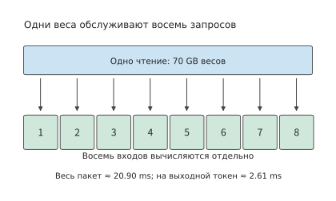
Рис. 1-10. Восемь запросов в одном batch совместно используют одно чтение весов и создают по одному выходу. Чтение для всего batch по-прежнему занимает около 20,90 мс; деление на восемь даёт приходящееся на один выход время обслуживания, при этом каждый запрос проходит через выполнение всего batch. «Время на один выходной токен» — это время выполнения всего batch, делённое на число выходных токенов; оно используется для пересчёта пропускной способности и не является задержкой ответа отдельного запроса.
Когда размер batch достигает определённой величины, время вычислений сравнивается со временем чтения весов. Положив \(2BN/\Pi=b_WN/\beta\), получим точку перехода:
В этом примере при \(b_W=1\), \(\Pi=989{,}4\times10^{12}\ \mathrm{FLOP/s}\) и \(\beta=3{,}35\times10^{12}\ \mathrm{bytes/s}\) получаем \(B_*\approx147{,}7\). В модели, учитывающей только основные матричные вычисления и чтение весов, при небольшом batch увеличение числа запросов позволяет распределить затраты на чтение весов. После примерно 148 запросов время вычислений превышает время чтения весов, поэтому дальнейшее увеличение batch почти пропорционально увеличивает время выполнения всего batch. Эта точка перехода учитывает только матричные вычисления и чтение весов, но не состояние контекста каждого запроса: согласно бюджету памяти из раздела 1.2.3, после размещения 73,73 ГБ весов на одной H100 SXM остаётся лишь около 6,27 ГБ, чего недостаточно для размещения KV-кэша 148 запросов.
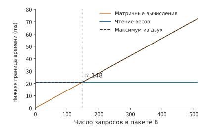
Рис. 1-11. С увеличением числа запросов в batch объём матричных вычислений растёт как \(2BN\), а объём чтения весов остаётся равным 70 ГБ на batch. Примерно при 148 запросах две нижние границы сравниваются, после чего общая скорость определяется временем вычислений.
Если разделить число выходов в batch \(B\) на показанную на предыдущем рисунке нижнюю границу времени, получим верхнюю границу пропускной способности для заданных условий. До точки перехода совместное чтение распределяется между большим числом выходов; после неё время вычислений растёт вместе с числом выходов, и кривая постепенно выходит на плато.
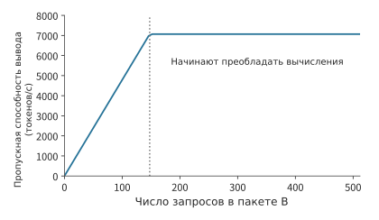
Рис. 1-12. Идеальная пропускная способность вывода описанной выше модели пакетной обработки. Кривая получается делением числа выходов в batch на нижнюю границу времени; вертикальная пунктирная линия соответствует той же точке перехода примерно при 148 запросах, что и на предыдущем рисунке.
Ту же точку перехода можно описать через арифметическую интенсивность \(I=F/R_W=2B/b_W\), то есть число операций, выполненных на каждый считанный байт данных. Когда \(I\) меньше отношения вычислительной мощности ускорителя к его пропускной способности \(\Pi/\beta\), больше времени занимает чтение; после превышения этого отношения больше времени занимают вычисления. Это исходная идея модели Roofline («линия крыши»), рассматриваемой в главе 4.5
Упражнение 1-3 [основное]: как пропускная способность и размер batch влияют на предельное время одного шага генерации
Используя модель и ускоритель из примера 1-1, примите эффективную пропускную способность равной 70% номинальной, а эффективную вычислительную производительность — 50% пиковой. Для \(B=1,16,64\) вычислите нижнюю границу времени выполнения всего batch, среднее приходящееся на один выходной токен время выполнения и идеальную пропускную способность. Цель — не более 10 мс на один шаг каждого запроса: для каких размеров batch уже по нижней границе времени можно определить, что цель недостижима? Затем вдвое уменьшите объём чтения весов, оставив объём вычислений неизменным, и повторите оценку. Найдите размер batch \(B_*\), при котором время вычислений равно времени чтения, и объясните, почему уменьшение приходящегося на один выход времени выполнения не означает сокращения задержки одного шага отдельного запроса.
1.3.3 Проверка оценки с помощью измерений¶
Предыдущая модель предсказывает две тенденции: при небольшом batch пропускная способность растёт с увеличением batch, а время выполнения всего batch ограничивается однократным чтением весов. В реальной программе каждый новый запрос дополнительно увеличивает объём доступа к контексту и вычислений. На рис. 1-13 и 1-14 приведены результаты измерений Qwen3-8B с весами BF16 на RTX PRO 6000 Blackwell Workstation Edition. Эта карта оснащена 96 ГБ видеопамяти с пропускной способностью 1,792 ТБ/с, а её пиковая производительность плотных матричных вычислений при входных данных BF16 и накоплении FP32 составляет 503,8 TFLOP/s. vLLM — предложенная в 2023 году исследователями Калифорнийского университета в Беркли и других организаций система с открытым исходным кодом для обслуживания инференса, которая организует запросы к модели и выполняет инференс. Изначально она была сосредоточена на проблеме неэффективного использования видеопамяти KV-кэшем, ограничивавшей размер batch. В этих измерениях использовалась версия 0.23 в режиме eager, то есть задания передавались ускорителю по очереди в порядке выполнения программы. Каждый запрос содержал 2048 входных токенов и генерировал 256 токенов; для каждого размера batch выполнялось по три измерения.7 Пропускная способность означает число выходов, создаваемых за единицу времени; время на выходной токен (time per output token, TPOT) здесь означает наблюдаемый клиентом средний интервал между выходами.
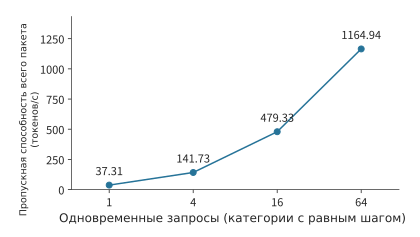
Рис. 1-13. Измеренная совокупная пропускная способность вывода Qwen3-8B. Четыре уровня числа запросов расположены с равными интервалами, вертикальная ось начинается с нуля; модель, точность, длины входа и выхода и интервал измерения остаются неизменными.
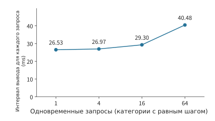
Рис. 1-14. Интервал между выходами отдельного запроса в той же серии измерений. Одновременно с ростом пропускной способности увеличивается и средний интервал для отдельного запроса; два рисунка соответственно показывают скорость вывода ускорителя и время ожидания пользователя.
При увеличении числа запросов с 1 до 64 совокупная пропускная способность возрастает примерно в 31 раз, а интервал между выходами отдельного запроса увеличивается примерно с 26,5 до 40,5 мс. Вместе два рисунка описывают компромисс пакетной обработки: ускоритель за тот же промежуток времени выполняет работу для большего числа запросов, но каждому запросу требуется больше времени для завершения одного шага генерации.
Пропускная способность на рис. 1-13 вычисляется делением совокупного числа выходов batch на общее время обработки этого batch, включая время обработки входных данных; из трёх измерений берётся медиана. Для TPOT сначала для каждого запроса вычисляется время между событиями первого и последнего выхода, затем оно делится на 255 интервалов между выходами, после чего берётся медиана по запросам в одном batch и, наконец, медиана по трём измерениям. Первая метрика характеризует скорость вывода всего экземпляра, вторая — воспринимаемый отдельным пользователем темп генерации. В главе 3 будет подробнее рассмотрено влияние поступления запросов, очередей и небольшого числа медленных запросов на эти метрики.
Эту тенденцию можно объяснить различием между весами и состоянием контекста. Несколько запросов совместно используют веса модели, но каждый из них хранит собственное состояние контекста. При увеличении параллелизма одна матричная операция одновременно обрабатывает векторы текущих входных токенов большего числа запросов, благодаря чему веса используются повторно чаще; в то же время объём вычислений внимания и доступа к контексту также растёт с числом запросов.
Если дополнить базовую модель этой растущей с числом запросов работой, время одного шага можно сначала записать как:
где \(F_1\) — объём вычислений на запрос, а \(R_{\mathrm{state},1}\) — объём чтения и записи состояния на запрос. При увеличении batch затраты на чтение весов распределяются между большим числом выходов, но одновременно возрастает и суммарный объём чтения и записи состояния всех запросов. В следующей главе эти объёмы работы будут вычислены для реальной модели, а также будет предсказано, куда сместится точка равенства времени вычислений и чтения при увеличении длины контекста.
Упражнение 1-4 [основное]: проверка модели пакетной обработки по измеренным пропускной способности и интервалу между выходами
По значениям измерений для четырёх уровней параллелизма, указанным на рис. 1-13 и 1-14, вычислите для каждого уровня отношение пропускной способности к пропускной способности одного запроса, а также относительный рост TPOT. Предположите, что после увеличения параллелизма ограничением остаётся только совместное чтение весов, а вычисления и доступ к контексту не увеличивают время выполнения. Как в таком случае должна изменяться пропускная способность? Сопоставьте это с фактическими результатами, предложите два объяснения, которые можно различить измерениями, и спроектируйте измерение, в котором изменяется только длина контекста, чтобы проверить их. Укажите, какие модель, длину выхода, а также начальную и конечную точки измерения необходимо оставить неизменными.
Вся эта оценка отвечала на пять вопросов: что перемещается, в каком объёме, сколько раз, по какому пути и кто ожидает. Структура модели определяет необходимые веса, разрядность и число параметров — объём хранения, повторное использование внутри batch изменяет число чтений, интерфейс видеопамяти задаёт пропускную способность, а зависимости выполнения определяют ожидание. Эти пять вопросов связывают структуру модели, путь данных и порядок выполнения в единый бюджет, каждый элемент которого можно вычислить отдельно.
1.3.4 Почему измерения не достигают предела: неполнота модели или системные накладные расходы¶
При оптимизации систем часто сравнивают новую реализацию со старой: если новый оператор на 30% быстрее старого, результат считается успешным. Но без знания предела невозможно определить, означают ли эти 30%, что реализация уже приблизилась к верхней границе, или до неё всё ещё остаётся целый порядок. Правильная отправная точка — сначала вывести из первых принципов допускаемую оборудованием верхнюю границу, а затем определить, насколько измеренный результат от неё отстаёт. Рассмотрим измерения из этой главы: при пропускной способности видеопамяти 1,792 ТБ/с чтение весов и старого KV на одном шаге decode должно занимать не менее 8,62 мс, тогда как измеренный интервал между выходами при batch, равном 1, составляет 26,5 мс, а MBU — всего 33%. У такого расхождения есть две причины, требующие совершенно разных действий. Первая — неполнота теоретической модели: приведённая выше модель учитывает только чтение весов и KV, но не учитывает векторные операции помимо внимания и семплирование. После добавления этих составляющих нижняя граница повысится, а расхождение уменьшится; в этом случае исправлять нужно модель, а не систему. Вторая причина — накладные расходы самой реализации: в данном эксперименте каждый kernel отправлялся отдельно в режиме eager, и каждая отправка проходила через Python-код на хосте, драйвер и PCIe, из-за чего ускоритель простаивал между двумя kernel; пошаговая запись журналов клиентом также занимала время хоста. Эти расходы не связаны с аппаратным пределом, и их можно устранить. Различить две причины можно только измерениями, в каждом из которых изменяется одно условие. При дополнительном измерении на той же карте с отключённым пошаговым журналированием интервал между выходами снизился до 12,1 мс; при измерении времени только по событиям ускорителя один шаг выполнения модели занял 10,7 мс, что лишь на 20% выше нижней границы 8,62 мс.6 Следовательно, бо́льшая часть трёхкратного расхождения обусловлена системными накладными расходами на стороне хоста. Во всех последующих главах несоответствие измерений нижней границе будет проверяться в том же порядке: сначала выясняется, не пропущены ли составляющие в модели, а затем — нет ли накладных расходов в реализации.
1.4 Как требования определяют проектирование архитектуры¶
В предыдущих оценках аппаратное обеспечение рассматривалось как заданное условие; однако и само это оборудование проектируется для удовлетворения конкретных требований. Изменения архитектуры в основном обусловлены двумя типами факторов: изменением требований, например ростом масштаба бизнеса или появлением новых нагрузок, и изменением аппаратного обеспечения, например более быстрым ростом производительности одного типа устройств по сравнению с другими. Оба типа изменений в конечном счёте проявляются как изменение соотношений. Если меняется соотношение между объёмом вычислений и объёмом чтения данных, пропускной способностью и вычислительной мощностью, ростом потребностей и возможностями одного чипа, то прежнее разумное разделение задач может перестать быть выгодным. Сначала в этом разделе рассматриваются три примера: требования к инференсу речи, с которыми Google столкнулась в 2013 году, требования к масштабированию облачной сети Azure в Microsoft в 2015–2016 годах и требования Huawei к организации вычислений и хранения данных на нескольких устройствах по мере развития больших моделей. Затем объясняется, как такие изменения последовательно распространяются по уровням AI-системы.
1.4.1 TPU¶
TPU — разработанный Google тензорный процессор для вычислений нейронных сетей; его первое поколение обозначается как TPU v1. В статье, представляющей это поколение, описывается одна из оценок потребностей. Google давно рассматривала применение в дата-центрах GPU, FPGA с аппаратной логикой, настраиваемой после развёртывания, и специализированных чипов, однако для некоторых ранних приложений было достаточно свободных ресурсов существующих дата-центров. В 2013 году прогноз использования голосового поиска изменил ход обсуждения: если каждый пользователь будет пользоваться голосовым поиском по три минуты в день, то для удовлетворения вычислительных потребностей может понадобиться удвоить масштаб дата-центров. Поэтому Google приступила к разработке специализированного чипа для инференса. TPU v1 начали развёртывать в дата-центрах в 2015 году, а статья об архитектуре была опубликована в 2017 году.8
Эту оценку можно выразить простой формулой: обозначим суточное число запросов через \(Q\), а требуемый объём вычислений на один запрос — через \(F_1\); тогда совокупная суточная потребность составит \(QF_1\). По мере роста числа запросов свободные мощности имеющегося оборудования в конце концов исчерпываются; тогда можно либо добавить серверы общего назначения, либо разработать специализированный процессор. Второй вариант требует первоначальных затрат на разработку, но может сократить время использования оборудования и энергопотребление на запрос; чем больше масштаб сервиса, тем легче накопленной экономии компенсировать первоначальные вложения.
В специализированном процессоре можно выделить больше вычислительных блоков для постоянно повторяющихся матричных операций, а затем подавать им входные данные через внутрикристальные буферы и тракты данных. Требования к времени отклика и энергопотреблению определяют распределение ресурсов вычислений, хранения и связи. Так изменение масштаба приложения воплощается в конструкции чипа.
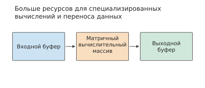
Рис. 1-15. Специализированный процессор организует вычислительный массив и буферы ввода-вывода вокруг повторяющихся матричных операций. Буфер — это область памяти для временного хранения данных, ожидающих вычисления или уже обработанных; три прямоугольника и соединяющие их стрелки показывают направления перемещения данных.
В главе 4 будут представлены матричный массив, буферы и тракты данных TPU. Когда суточная вычислительная потребность \(QF_1\) приближается к свободной вычислительной мощности дата-центра, специализированный процессор может оказаться выгоднее процессора общего назначения.
1.4.2 SmartNIC¶
При проектировании в 2015 году нового поколения облачных серверов с пропускной способностью 40 Gbit/s Microsoft Azure столкнулась с другим типом роста: пропускная способность сети увеличивалась, а политики виртуальной сети становились всё сложнее. SmartNIC (интеллектуальная сетевая карта) — это устройство, способное выполнять часть обработки данных непосредственно на сетевой карте. С конца 2015 года Microsoft устанавливала SmartNIC на базе FPGA в новые серверы Azure, а в 2016 году предоставила клиентам сервис Accelerated Networking (ускоренная сеть). Аппаратную логику FPGA можно перенастраивать, поэтому обработку сетевого трафика можно изменять вслед за обновлением политик.14
Проект должен был одновременно удовлетворять двум требованиям: сохранять больше ядер CPU для клиентских приложений и обеспечивать быстрое обновление правил сетевой изоляции, пересылки и контроля доступа. Обработка сетевого трафика на облачном сервере использует именно эти ядра CPU: помимо выполнения приложений, CPU должен обрабатывать отправляемые и принимаемые пакеты. Виртуальная машина — это изолированная вычислительная среда, выделенная на физическом хосте. Когда несколько виртуальных машин совместно используют физическую сеть, платформа должна определять принадлежность данных, находить правила пересылки, выполнять инкапсуляцию и поддерживать изоляцию.
Сначала оценим, сколько ядер CPU занимает эта работа. При минимальном размере кадра через канал 40 Gbit/s необходимо обрабатывать около шестидесяти миллионов пакетов в секунду. Если одно ядро обрабатывает от десяти до двадцати миллионов пакетов в секунду, то для непрерывной пересылки потребуется примерно
Здесь \(\lambda_{\mathrm{packet}}\) — частота поступления пакетов, а \(\mu_{\mathrm{core}}\) — скорость их обработки одним ядром. При увеличении пропускной способности канала \(\lambda_{\mathrm{packet}}\) растёт, тогда как \(\mu_{\mathrm{core}}\) не увеличивается синхронно, поэтому требуемое число ядер растёт пропорционально отношению этих величин. Эти ядра снова и снова выполняют один и тот же процесс обработки пакетов; перенеся соответствующую работу на сетевую карту, можно освободить время CPU для приложений.9
Подход Azure заключается в том, что программное обеспечение хоста управляет сложными политиками, а правила обработки пакетов, подходящие для многократного исполнения, передаются FPGA. Обработка выполняется непосредственно при прохождении данных через сетевую карту, и CPU может уделять больше времени клиентским приложениям. Ключевой задачей проектирования становится сочетание возможности программного обновления со скоростью аппаратной обработки.
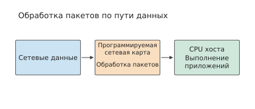
Рис. 1-16. Программируемая сетевая карта выполняет заданную обработку пакетов до поступления данных на хост. Сплошная линия показывает движение данных; обработка на сетевой карте сокращает объём вспомогательной работы CPU хоста.
После переноса обработки пакетов на сетевую карту часть операций можно выполнять непосредственно по мере поступления данных, что уменьшает нагрузку на CPU. Если сетевой карте также нужны данные из памяти хоста, она должна читать их через PCIe; в этом случае скорость чтения определяется задержкой ответа и числом запросов, которые можно отправить одновременно. В главе 7 такой доступ будет проанализирован на примере KV-Direct — системы, позволяющей программируемой сетевой карте непосредственно обрабатывать запросы к хранилищу ключей и значений. Такое хранилище находит, читает или обновляет соответствующее значение по уникальному ключу.
1.4.3 Unified Bus¶
SmartNIC меняет разделение задач внутри одного сервера. Если же проблема заключается в недостаточном совокупном объёме ресурсов отдельного ускорителя, необходимо дополнительно рассмотреть организацию совместной работы нескольких ускорителей. Когда модель и состояние её выполнения не помещаются на одном ускорителе, один из наиболее очевидных вариантов — добавить ускорители. Однако между «увеличением общей ёмкости» и «эффективным выполнением задачи» остаются вопросы разделения работы, обмена данными и синхронизации.
Например, суммарного объёма видеопамяти двух карт может быть достаточно для хранения весов, но выполняющий вычисления ускоритель должен иметь доступ к необходимым данным. Если один шаг вычислений зависит от результата другой карты, придётся ждать его передачи; если несколько карт совместно выполняют одну операцию, потребуется организовать их взаимодействие. Увеличение числа ускорителей добавляет ресурсы, но одновременно увеличивает объём работы по их соединению.
Развиваемая Huawei для Ascend и других гетерогенных вычислительных устройств технология UB (Unified Bus, единое межсоединение) расширяет эту задачу до совместной работы множества устройств. Автор участвовал в этом проекте в 2020–2023 годах, а соответствующие исследования начались ещё в 2019 году — до выпуска компанией OpenAI авторегрессионной языковой модели GPT-3 в 2020 году. После того как GPT-3 продемонстрировала возможности больших моделей, отрасль шире осознала потребность во взаимодействии множества устройств, вследствие чего инвестиции в проект увеличились. Требуемая для обучения моделей вычислительная мощность растёт намного быстрее производительности отдельного ускорителя; отношение этих величин постоянно увеличивается, а значит, совместно работающих ускорителей должно становиться всё больше.
Основной задачей в этот период было обеспечить использование нескольких ускорительных карт постоянно растущими моделями и упростить доступ вычислительных устройств к памяти и данным на других устройствах. Как только данные пересекают границу хоста, программному обеспечению приходится переходить на интерфейс передачи сообщений, заново организовывать буферы, а затем проходить через драйвер сетевой карты и стек протоколов; каждый дополнительный уровень абстракции добавляет задержку. UB позволяет устройствам напрямую обращаться к памяти других устройств, устраняя эти уровни абстракции и приближая время удалённого доступа к нижней границе, определяемой задержкой линии связи, а верхним уровням предоставляет возможность более гибко организовывать ресурсы. Единый механизм доступа позволяет устройствам напрямую использовать ресурсы в более широких пределах, а топология определяет расстояние до этих ресурсов и пропускную способность доступа. Поэтому разделение модели и проектирование межсоединения оказываются тесно связанными. В разделе 6.5.5 организация UB рассматривается с точки зрения масштаба суперузла, а в разделах 7.3 и 7.4 по пути одного удалённого обращения выводятся его задержка, частота запросов и состояние соединения, а также рассчитывается, сколько времени занимал каждый из устранённых уровней абстракции.
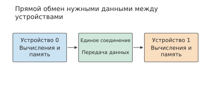
Рис. 1-17. Единое межсоединение объединяет вычислительные ресурсы и ресурсы хранения различных устройств. Разделение модели определяет, какими данными необходимо обмениваться, а межсоединение доставляет их устройствам, которые будут использовать эти данные далее.
Рассмотрим в качестве примера развёртывание модели на двух картах из этой главы: равномерное распределение весов позволяет выполнить ограничение на ёмкость каждой карты, но на каждом этапе всё равно приходится ждать входных данных и результатов предыдущего этапа. Добавление ускорителей изменяет \(M_{\mathrm{cap}}\) и доступную вычислительную мощность, но также создаёт новый объём обмена данными и новые зависимости. Поэтому на первом шаге нужно проверить, может ли каждый ускоритель вместить необходимые данные, на втором — рассчитать объём вычислений, чтения и записи для каждого ускорителя, а на третьем — вычислить общее время с учётом зависимостей выполнения. Как бы ни росли модель и число ускорителей, этот порядок анализа остаётся неизменным.
1.4.4 Последовательное распространение изменений¶
Решения из трёх рассмотренных примеров после развёртывания сами создают новые ограничения. После установки FPGA на серверы Azure облачная платформа должна обеспечивать обновление логики FPGA и обработку сбоев14; после объединения множества ускорителей посредством UB при каждой синхронизации приходится ждать больше устройств, а число компонентов, способных отказать, также увеличивается. В AI-системах такое последовательное распространение продолжается; в следующей таблице основные этапы перечислены в порядке глав книги.
| Изменение | Предположение, которое перестаёт выполняться | Главы |
|---|---|---|
| Время выполнения нейронной сети сосредоточено в матричных операциях | Процессор общего назначения способен выполнять основные вычисления при приемлемой площади и энергопотреблении | Главы 4 и 5 |
| Веса модели превышают объём видеопамяти одной карты | Одну модель можно разместить на одной карте | Глава 6 |
| Обучение и инференс синхронно выполняются на нескольких серверах | Сетевой трафик состоит из независимых потоков данных, допускающих статистическое мультиплексирование | Глава 7 |
| При декодировании каждое чтение весов сопровождается лишь небольшим объёмом вычислений | Скорость выполнения определяется пиковой вычислительной мощностью | Глава 8 |
| Контекст становится длиннее, а объём KV приближается к объёму весов или даже превышает его | Состояние контекста невелико, и его всегда можно вычислить заново | Глава 9 |
| Масштаб обучения достигает тысяч карт | Сбои происходят лишь изредка | Глава 10 |
| Нагрузки AI-агентов и RL пакетно создают окружения инструментов | Программы в контейнерах независимы друг от друга и каждая определяет собственный темп выполнения | Глава 11 |
| Периферийные устройства способны выполнять модель | Сосредоточение вычислений в облаке всегда сокращает время выполнения | Глава 12 |
По сравнению с операционными системами общего назначения и облачными платформами AI-системы обладают одним преимуществом: типов нагрузки немного, и они известны заранее. Платформы общего назначения должны выполнять заранее неизвестные программы, поэтому могут полагаться только на унифицированные абстракции, строгую изоляцию и статистическое мультиплексирование. AI-системы проектируются вокруг небольшого числа моделей и детерминированных процессов выполнения, поэтому можно заранее определить описанные в разделе 1.1.1 вычислительные зависимости и зависимости по данным, а затем на их основе нарушить прежние границы абстракций. Например, платформа песочниц RL из главы 11 получает от фреймворка обучения информацию о вытеснении и заблаговременно приостанавливает соответствующие песочницы.
Многие отдельные технологии в AI-системах не являются новыми изобретениями: постраничное управление KV в главе 8 заимствует механизм страниц у операционных систем, размещение песочниц в главе 11 использует предложенный в 2001 году рандомизированный алгоритм power-of-k-choices, а освобождение памяти виртуальных машин основано на предложенном в 2002 году механизме balloon.15 После изменения соотношений ранее невыгодные или невостребованные методы снова становятся целесообразными; применимость каждой технологии по-прежнему необходимо заново рассчитывать для текущих соотношений.
От инференса речи к облачной сети, а затем к выполнению больших моделей на множестве устройств — изменения требований и аппаратного обеспечения определяют, какое узкое место необходимо устранить первым, а также заново распределяют работу между аппаратным обеспечением, программным обеспечением и соединениями. Если сопоставить эти примеры с приведённой в начале схемой из шести уровней, все эти решения по-новому организуют вычисления и перемещение данных. Через последующие главы проходят три сквозные темы: изменение соотношений объясняет, почему требуется новое решение; перемещение данных показывает, что именно оно изменило; физические пределы из раздела 1.3.4 позволяют оценить достигнутый результат. Отсюда следует главная тема книги: перемещение данных формирует архитектуру AI Infra.
Заблуждения и ловушки¶
Заблуждение: если удвоить пиковую вычислительную мощность, скорость выполнения также удвоится. Сначала проверьте, ограничено ли текущее выполнение вычислительной мощностью. В задаче 1-1 нижняя граница времени чтения весов намного больше нижней границы времени матричных вычислений, поэтому повышение пиковой производительности матричных вычислений почти не влияет на нижнюю границу времени выполнения. Если оптимизируется лишь часть всей задачи, верхнюю границу выигрыша также следует проверить по закону Амдала.
Заблуждение: если видеопамяти хватает для весов, значит, она поддержит целевое число параллельных запросов. Веса — лишь часть постоянно размещённых данных. Состояние контекста, рабочая область и пространство, зарезервированное средой выполнения, вместе занимают видеопамять; при использовании нескольких ускорителей расчёт необходимо выполнять отдельно для каждого из них.
Заблуждение: если реализация стала на 30% быстрее предыдущей, оптимизацию можно считать успешной. Не зная предела, допускаемого аппаратным обеспечением, невозможно определить, означают ли эти 30% приближение к верхней границе или до неё по-прежнему не хватает целого порядка величины. Следует сначала вычислить предел, а затем в порядке, указанном в разделе 1.3.4, выяснить, вызван ли разрыв неучтёнными составляющими модели или системными накладными расходами.
Заблуждение: систему, хорошо зарекомендовавшую себя в сценариях предыдущего поколения, можно напрямую использовать для новой нагрузки. Любая архитектура системы опирается на соотношения, принятые при её проектировании. Универсальные контейнерные платформы предполагают, что запросы поступают от независимых друг от друга арендаторов, а программы сами определяют темп выполнения. Но при RL-обучении песочницы создаются пакетами, а темп задаётся со стороны GPU; прямое заимствование прежней архитектуры заставит дорогостоящие ускорители простаивать в ожидании (глава 11). Прежде чем повторно использовать архитектуру, следует проверить, сохраняются ли соотношения, на которых она основана.
Заблуждение: если пропускная способность повысится, время ожидания каждого пользователя сократится. Повторное использование данных внутри пакета снижает приходящиеся на каждый результат затраты на чтение, однако каждый запрос всё равно должен пройти через очередь и выполнение всего пакета. Пропускную способность и время отклика следует указывать вместе.
Краткий справочник чисел для этой главы¶
В таблице сведены ключевые показатели модели Qwen3-8B, использованной в измерениях раздела 1.3.3. На этапе prefill уже имеющиеся входные данные обрабатываются за один раз и получается первый результат; при каждом шаге decode в модель передаётся один новый токен, после чего генерация продолжается с использованием сохранённого KV. В таблице зафиксированы веса, активации и KV в формате BF16 при числе одновременных запросов 1; на вход prefill подаются 2048 токенов, а decode выполняет один шаг после контекста из 2048 токенов.17
| Требования модели | Значение | Как использовать |
|---|---|---|
| Полные веса BF16 | 16.38 GB | Определить объём видеопамяти, необходимый для загрузки модели |
| Полный KV модели на каждый токен контекста | 144 KiB | Умножить длину контекста на это число, чтобы получить объём KV для одного запроса |
| KV контекста из 2048 токенов | 288 MiB | Около 0.302 GB; увеличивается с числом независимых запросов |
| Матричные операции prefill для 2048 токенов | 29.69 TFLOPs | Разделить на соответствующую производительность матричных вычислений, чтобы получить нижнюю границу времени вычисления |
| Матричные операции одного шага decode | 16.34 GFLOPs | На вход подаётся один токен, также выполняется обращение к существующему контексту |
| Основной объём чтения весов за один шаг decode | 15.14 GB | Веса считываются один раз; из слоя эмбеддингов — таблицы поиска, преобразующей номер токена в вектор, — считывается только строка текущего токена |
| Чтение прежнего KV за один шаг decode | 0.302 GB | Число байтов при однократном чтении KV каждого контекста |
Оценка нижней границы времени выполнения по объёму вычислений и чтения. Здесь используется RTX PRO 6000 Blackwell Workstation Edition, на которой проводились измерения для рисунков 1-13 и 1-14; сначала отдельно рассчитываются матричные операции и чтение данных. При пиковой производительности матричных вычислений 503.8 TFLOP/s матричные операции prefill занимают около 58.9 ms, а decode — около 0.0324 ms; при пропускной способности видеопамяти 1.792 TB/s чтение основных весов и прежнего KV за один шаг decode занимает около 8.62 ms. Измеренный интервал вывода при batch, равном 1, составляет около 26.5 ms — примерно втрое больше этой нижней границы чтения; причины расхождения рассматриваются в разделе 1.3.4. Здесь по отдельности оценивается минимальное время, необходимое для вычислений и чтения; при полном выполнении к нему также добавляются другие операции, фактические обращения к памяти и время запуска в соответствии с порядком операторов. В главах 2–5 эти расчёты будут последовательно построены по отдельным составляющим.
Эти числа объясняют различия между двумя этапами: prefill обрабатывает большой объём входных данных за один вызов, поэтому объём матричных вычислений велик; decode для одного запроса каждый раз обрабатывает лишь один токен, но при этом всё равно должен считывать большой объём весов и контекста. Повышение вычислительной производительности, увеличение пропускной способности и расширение повторного использования данных внутри batch влияют на разные составляющие времени.
Итоги главы¶
Приложения выражают поведение с помощью моделей и контекста, поэтому многие задачи используют схожие базовые вычисления. Понимание вычислительных зависимостей в модели и времени нахождения состояния в памяти позволяет комплексно рассматривать проектные решения, прежде относившиеся к разным уровням: изменение представления данных, объединение этапов выполнения, повторное использование результатов подготовительной работы или сокращение времени передачи данных и синхронизации между ускорителями. В следующих главах будет количественно оценён выигрыш от этих изменений, показано, какие проектные компромиссы вследствие этого меняются, а затем с учётом новых ограничений будут выбраны модель и системное решение.
При анализе системы сначала проверьте, помещаются ли данные в память, затем оцените время выполнения по объёму вычислений и операций чтения и записи, а в конце проанализируйте перекрытие операций и ожидание с учётом порядка выполнения. Нижняя граница, рассчитанная по пиковым показателям, представляет собой физический предел оборудования, а отношение нижней границы к фактически измеренному значению — коэффициент утилизации; расхождение между ними означает, что либо в модели не учтён какой-то фактор, либо в системе есть устранимые накладные расходы. В примере с моделью 70B чтение весов занимает примерно в 148 раз больше времени, чем матричные вычисления, поэтому увеличить пропускную способность, сократить объём чтения и повысить повторное использование данных полезнее для уменьшения времени выполнения. Совместное использование данных внутри батча может повысить пропускную способность, но время ответа на каждый запрос также включает выполнение всего батча и ожидание в очереди.
Ключевые упражнения этой главы — 1-2, 1-3 и 1-4: они посвящены соответственно преобразованию единиц и оценке осуществимости, оценке ресурсов после изменения условий, а также сравнению прогнозируемых и фактически измеренных результатов. В следующей главе на основе реальной конфигурации модели будут уточнены оценки объёма вычислений \(2N\) и объёма чтения весов, а для этих расчётов будут приведены конкретные размеры матриц и состояния.
-
Метафору «восемнадцатиэтажной пагоды» предложил главный научный сотрудник Huawei в области полупроводников доктор Ляо Хэн в продолжительном публичном интервью в июле 2026 года, чтобы описать многоуровневые зависимости — от приложений до технологических процессов производства. ↩
-
Jeff Dean, выступление на LADIS 2009, локальный PDF, раздел «Numbers Everyone Should Know» и часть об оценках на бумаге. В примере с позиционированием головки диска предполагается последовательное выполнение 20 случайных чтений. ↩
-
NVIDIA, техническое описание архитектуры H100 и снимок страницы спецификаций. В этой главе используются характеристики форм-фактора SXM и плотных матричных операций BF16; исходные версии входных данных и контрольные значения приведены в перечне источников иллюстраций. ↩
-
Пересчёт приближённого бюджета для 70B и сопутствующие сценарии; пересчёт единиц и ёмкости отдельных ускорителей. График оценки времени в разделе 1.3 использует этот фиксированный приближённый результат для 70B; график ёмкости в разделе 1.2.3 использует реальный индекс весов и результаты группового квантования. ↩
-
Williams, Waterman, Patterson, статья о Roofline. ↩
-
Запись дополнительных измерений и хронометраж событий ускорителя. Во время дополнительных измерений одновременно был отключён кэш префиксов и заново сформированы входные данные, поэтому влияние пошагового журналирования невозможно полностью отделить от этих условий; события ускорителя охватывают только выполнение модели, без сэмплирования и вывода. ↩
-
Описание записей упражнения 1-4, результаты структурированного анализа и последующие дополнительные измерения. В основном тексте и на рисунках 1-13 и 1-14 используется первоначально записанная группа коротких входных данных. ↩
-
Jouppi и др., статья о TPU v1, раздел 2 с описанием происхождения, архитектуры и реализации. Голосовой поиск продолжительностью три минуты — исторический прогноз требований, приведённый в статье. ↩
-
Докторская диссертация автора, базовый вариант простой пересылки в разделе 4.2.1; пересчёт бюджета ядер. Около шестидесяти миллионов пакетов в секунду получено расчётом для 40 Gbit/s при занятии линии каждым кадром в течение передачи 84 байтов; 3–6 ядер соответствуют базовому варианту простой пересылки. ↩
-
Связанные исследования приведены в обзоре границ абстракции; обсуждение применения базовых моделей для множества последующих задач см. в Stanford CRFM. ↩
-
Схема запроса представляет собой обобщённую иллюстрацию зон ответственности; разделение ответственности за планирование и управление состоянием см. в документации vLLM Scheduler версии v0.26.0; в измерениях раздела 1.3.3 использовалась vLLM 0.23.0. Стратегия маршрутизации, расположение tokenizer и разделение prefill и decode зависят от выбранной конфигурации развёртывания. ↩
-
Конкретные примеры продуктов см. в материалах NVIDIA GB200 NVL72, руководстве по аппаратному обеспечению и руководстве по сети. На рисунке 1-5 показана обобщённая схема соединений. ↩
-
Количество параметров и число байтов BF16 получены из публичного индекса весов DeepSeek-R1-Distill-Llama-70B и конфигурации фиксированной версии. Общий объём весов при групповом квантовании взят из сводных данных по всей модели в записи поэлементного расчёта: 128 параметров на группу и 2 байта на scale. Номинальная спецификация RTX 4090 на 24 GB приведена в архивной копии официальной страницы. Для единой оценки ёмкости в этом разделе используются указанные в спецификациях значения GB. ↩
-
Firestone и др., Microsoft, Azure Accelerated Networking: SmartNICs in the Public Cloud, NSDI 2018; текст исходной статьи. В аннотации указано развёртывание в конце 2015 года и предоставление сервиса клиентам в 2016 году; в разделе 3 описаны цели разработки: снижение загрузки CPU, сохранение программируемости и поддержка более высокой пропускной способности. ↩↩
-
Описание power-of-k-choices см. в M. Mitzenmacher, The Power of Two Choices in Randomized Load Balancing, IEEE TPDS, 2001; механизм balloon — в C. A. Waldspurger, Memory Resource Management in VMware ESX Server, OSDI 2002. Обе работы цитируются в статье DSec, а соответствующие механизмы рассматриваются в разделах 11.2.2 и 11.3.2. ↩
-
Числа взяты из фиксированных спецификаций GPU с отдельными источниками для каждого показателя и соответствуют
rtx4090,a100-80gb-sxmиh100-sxm; для каждого значения отдельно проверены точность, способ накопления и условие плотности. В этой таблице GB и TB являются десятичными единицами. ↩ -
Исходный код пересчёта справочных чисел вычисляет матричные операции prefill и decode на основе фиксированной конфигурации Qwen3-8B; объём чтения взят из расчёта повторного использования весов внутри batch. Объём весов включает полную таблицу эмбеддингов, однако при пошаговой генерации считывается только строка эмбеддинга, соответствующая текущему токену; время чтения и записи рассчитано для идеального случая, когда к каждому основному набору данных обращаются один раз. ↩
-
Официальный технический отчёт DeepSeek V4.1, разделы 1, 2, 3 и 6; фиксированные условия и пересчёт сквозного примера из нескольких глав. ↩